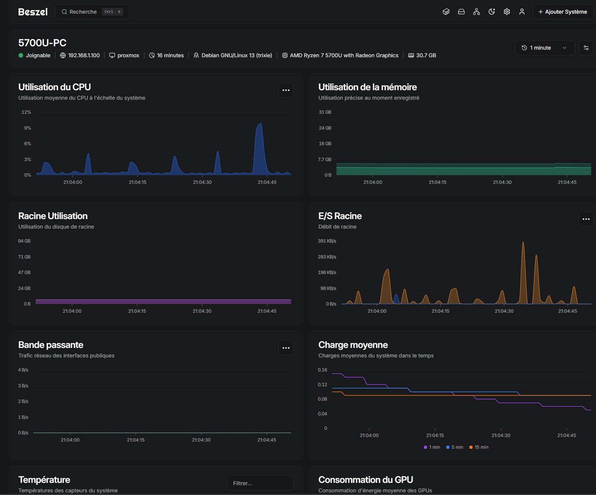

Architecture Réseau et Système
Services Hébergés
Sécurité et Bonnes Pratiques
- Exposition réseau minimale : accès aux services critiques restreint exclusivement par le tunnel VPN (Tailscale).
- Authentification renforcée : double facteur (TOTP) actif sur les services sensibles.
- Durcissement de l'hôte : connexion SSH de l'utilisateur root désactivée.
- Prévention des intrusions : configuration de Fail2ban pour bannir les tentatives de connexions malveillantes.
- Maintenance : application des mises à jour système automatisées.
- Résilience : politique de sauvegardes régulières gérée via Proxmox Backup Server.
Supervision et Métriques
Le monitoring est assuré par Beszel couplé à l'API Proxmox, offrant une visibilité en temps réel sur la consommation CPU, la RAM, l'espace disque et l'état des conteneurs LXC.

Gestion des Incidents : Cas Pratique
Symptôme : Crash récurrent d'un serveur Minecraft lors de sa phase de démarrage dans son conteneur de jeu.
Cause : Incompatibilité stricte de la version du serveur de jeu avec l'environnement d'exécution Java 25 récemment déployé.
Solution : Identification de l'erreur via les logs, puis rétrogradation de l'environnement vers la version stable Java 21 LTS, restaurant ainsi un fonctionnement normal.
Prochaines Étapes et Évolutions
- Déploiement d'un NAS : Mise en place d'un NAS personnel pour centraliser les documents et photos de la famille avec redondance.
- Segmentation réseau : Déploiement de VLANs pour séparer physiquement et logiquement les flux (DMZ, réseau privé, management) via l'intégration d'un switch administrable et d'un routeur/pare-feu matériel (pfSense ou OPNsense).
Ce que j'ai appris
[à compléter : Rédigez ici un ou deux paragraphes expliquant comment ce projet vous a permis de comprendre les enjeux de la virtualisation, l'importance d'une documentation rigoureuse, la logique des flux réseaux via le reverse proxy, et la rigueur nécessaire pour maintenir une infrastructure disponible et sécurisée au quotidien.]